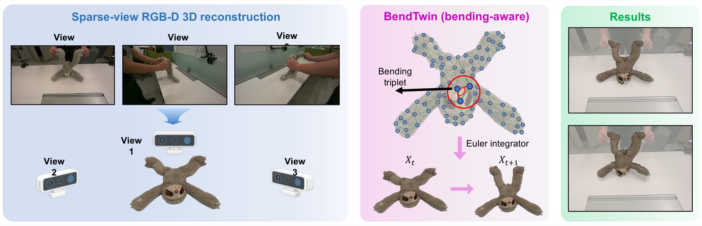
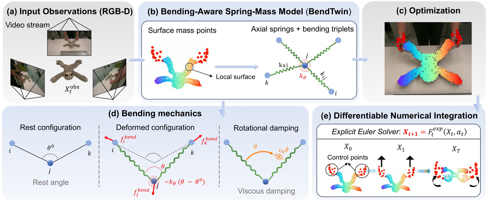
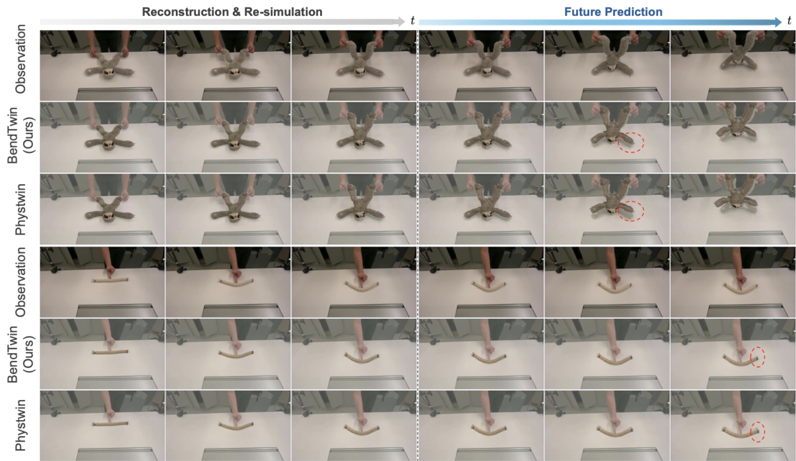

Local bending triplets
Surface nodes carry axial springs and angular constraints. Bending stiffness resists changes from each triplet’s rest angle.
* Equal contribution · † Corresponding author
From observation to a physical twin

Lower reconstruction
Chamfer distance
Lower future-prediction
Chamfer distance
Graph sampling ratio
tested in sparse ablations
Error reductions compare BendTwin with PhysTwin on the paper’s non-cloth evaluation set (Table 1). Sampling ratio is from Table 2.
The idea
Reconstructing deformable objects from video requires a model of how they move, not just how they look. Conventional spring–mass systems constrain distances between pairs of nodes, but can lose local shape stability as the physical graph becomes sparse.
BendTwin adds bending stiffness and damping over local surface triplets. By penalizing deviations from rest angles and damping angular motion, it improves reconstruction and future prediction while retaining a differentiable spring–mass formulation. Experiments and ablations evaluate these constraints under graph downsampling and in a surface-only configuration.

Surface nodes carry axial springs and angular constraints. Bending stiffness resists changes from each triplet’s rest angle.
Geometry and tracking losses fit the mechanical parameters to observed motion. Bending damping dissipates angular oscillation.
A differentiable explicit Euler simulator rolls the fitted model forward, from observed reconstruction to unseen future frames.
Experiments & evidence
Evaluated on non-cloth deformable objects from the PhysTwin benchmark. The first 70% of each sequence is used for reconstruction and re-simulation; the remaining 30% tests future prediction.

| Method | CD ↓ | Track ↓ | IoU (%) ↑ | PSNR ↑ | SSIM ↑ | LPIPS ↓ |
|---|---|---|---|---|---|---|
| PhysTwin | 0.0058 | 0.0091 | 79.5 | 28.429 | 0.963 | 0.022 |
| BendTwin Ours | 0.0047 | 0.0078 | 80.6 | 28.605 | 0.963 | 0.021 |
| Method | CD ↓ | Track ↓ | IoU (%) ↑ | PSNR ↑ | SSIM ↑ | LPIPS ↓ |
|---|---|---|---|---|---|---|
| PhysTwin | 0.0095 | 0.0166 | 68.7 | 26.412 | 0.957 | 0.036 |
| BendTwin Ours | 0.0079 | 0.0153 | 71.5 | 26.755 | 0.957 | 0.035 |
↓ Lower is better. ↑ Higher is better. CD: Chamfer distance; Track: tracking error. Values reproduced from Table 1 of the paper.
Matched-graph ablations test sampling ratios of 0.1 and 0.05. BendTwin improves on the axial-only baseline as connectivity is reduced. A separate experiment removes all interior nodes to examine a surface-only physical representation.
Read the ablation studiesReference
@inproceedings{jing2026bendtwin,
title={BendTwin: Robust Dense-to-Sparse Physical Reconstruction
with Bending-Aware Differentiable Spring-Mass Models},
author={Jing, Yixiong and Wang, Qi and Chen, Lin and Jiang, Junwei
and Wang, Guangming and Wu, Haibing and Wysocki, Olaf
and Ma, Wanli and Sheil, Brian},
booktitle={NeurIPS 2026 Workshop (PUDM)},
note={Oral presentation},
year={2026},
url={https://arxiv.org/abs/2608.06164}
}